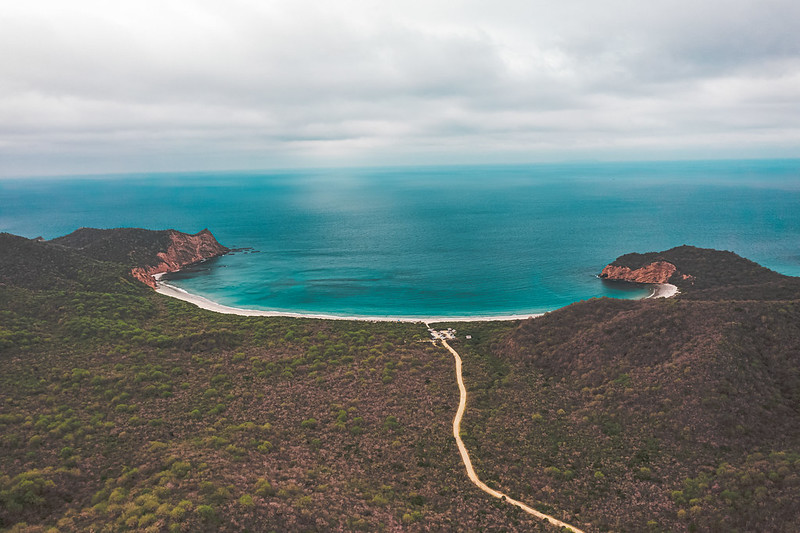
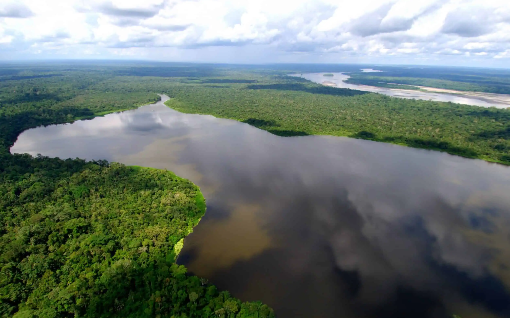
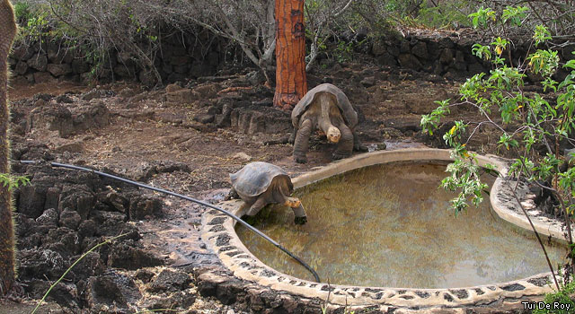
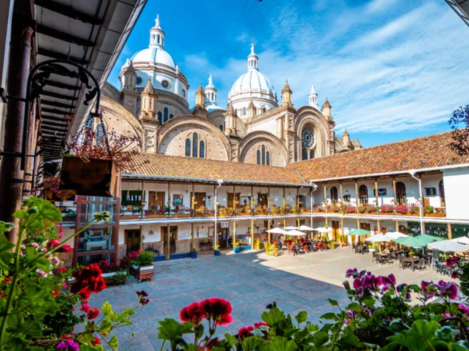
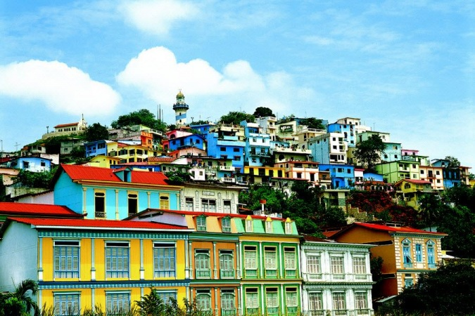

Jardín Botánico de Quito
📍Parque La Carolina, Quito.
Un espacio verde en la ciudad con orquídeas, plantas exóticas y senderos ideales para paseos ecológicos.

Playa Los Frailes
📍Parque Nacional Machalilla, Manabí
Una playa de aguas turquesas y arena blanca, rodeada de acantilados y vegetación natural.

Reserva Biológica Limoncocha
📍Shushufindi, Sucumbíos
Lagunas tranquilas rodeadas de selva, perfectas para paseos en canoa y avistamiento de fauna.

Centro de Crianza Fausto Llerena
📍Isla Santa Cruz, Galápagos
Centro ecológico dedicado a la protección de tortugas gigantes y especies endémicas de Galápagos.

Centro Histórico de Cuenca
📍Cuenca, Azuay
Calles empedradas, iglesias coloniales, plazas floridas y mercados llenos de tradición. Un recorrido por la historia, la cultura y los sabores típicos de la ciudad.

Puerto y Cerro Santa Ana
📍 Guayaquil, Guayas
Un paseo moderno a orillas del río, rodeado de arquitectura contemporánea, bares y museos, que conduce hasta el cerro con casas coloridas, arte urbano y miradores panorámicos.